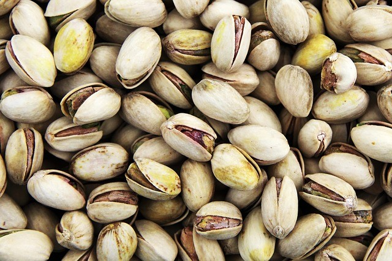

Documentación de las frutas
Las frutas son, quizás, los alimentos más llamativos por su diversidad de colores y formas. Pero además de lo que muestran a simple vista, forman parte de los alimentos con mayor cantidad de nutrientes y sustancias naturales altamente beneficiosas para la salud.
Si nos detenemos a pensar, veremos que las frutas y todos los vegetales, sobreviven a la intemperie, enfrentando todo tipo de condiciones y agresiones meteorológicas.
Todo ello es posible gracias a las sustancias protectoras y antioxidantes naturales que poseen. En definitiva esas mismas sustancias son las que nos protegen cuando consumimos el alimento.
Es decir que nos beneficiamos absolutamente con todas esas vitaminas y nutrientes que la fruta posee. Llenamos de vida todo nuestro organismo.
Iván Soberano Rodriguez
Arándano
Arándanos
Los arándanos: una fruta rica, también en salud
Consideradas por muchos como las "frutas del siglo 21", estas bayas son ampliamente solicitada por su sabor
dulce y sus beneficios comprobados para la salud, entre los que se incluyen efectos antibióticos, antioxidantes
y desinflamatorios . Pueden ser comida fresca o utilizada en platos dulces y salados, fríos y calientes, en jugos
y helados, en repostería e incluso en ensaladas.
Beneficios
¿Sabías que los arándanos se utilizaban antiguamente para prevenir y tratar las enfermedades relacionadas con las vías urinarias?
Debido a un componente que contiene, aumenta la acidez de la orina y no permite que se desarrollen las bacterias
en este medio, resultando efectivo para evitar la inflamación de la vejiga urinaria,para prevenir la cistitis,
para los problemas de riñones, para los problemas de próstata, uretra y para todos los problemas asociados con
el tracto urinario en general.
Propiedades Beneficios Para qué sirve Ventajas Efectos Secundarios Contraindicaciones
Propiedades del arándano
El arándano posee las siguientes propiedades:
astringentes,
tónicas,
antisépticas,
antidiarreicas,
hipoglucemiantes,
antioxidantes.
Beneficios del arándano
Los beneficios del arándano se concentran en su poder antioxidante, ayudándonos a prevenir enfermedades
como el cáncer y las enfermedades cardiovasculares, y su poder antiadherente, que hace que las bacterias
dañinas para nuestro organismo como el Helicobacter pylori, entre otras, no se adhieran a las paredes del
aparato gastrointestinal, evitando su proliferación y por lo tanto el daño a nuestro cuerpo.
Este poder nos ayuda en dos partes del cuerpo, en la zona gastrointestinal y en las vías urinarias,
teniendo una duración aproximada de ocho horas, por lo que para estar protegidos debemos tomarlo por
la mañana y por la noche. Además, el arándano contiene vitamina P, utilizada en problemas de
circulación y en afecciones vasculares del ojo.
Para qué sirve el arándano
El arándano se utiliza en los siguientes casos:
El fruto del arándano tiene la capacidad de proteger y fortalecer las paredes de los pequeños vasos
sanguíneos conocidos como capilares, por lo que es útil en el tratamiento y la prevención de venas
varicosas, varices, flebitis y hemorroides, al igual que en la prevención de problemas de la visión
causados por la ruptura de pequeños vasos sanguíneos en los ojos. Un efecto que ha recibido mucha
atención en años recientes es el de ayudar a prevenir la pérdida de visión a causa de la degeneración
de la retina que se produce con gran frecuencia en personas de edades avanzadas. En otros estudios se
ha encontrado que la combinación de arándano con vitamina E es muy eficaz para prevenir y para frenar
el avance de las cataratas. El arándano contiene, además, unas sustancias conocidas como antocianidinas
que ayudan a fortalecer el colágeno. El colágeno es una proteina que es parte importante de los ligamentos,
tendones y el cartílago. Las antocianidinas también combaten los estados inflamatorios y tienen importantes
propiedades antioxidantes. Estas propiedades hacen al arándano útil en el tratamiento de enfermedades
inflamatorias de las articulaciones y de las encías, como la artritis y la artrosis.
Las hojas del arándano contienen sustancias que reducen el contenido de glucosa en la sangre, por lo que
productos derivados de estas son usados por personas diabéticas para reducir su necesidad de medicamentos
orales o de insulina, pero algunos naturópatas e investigadores señalan que este efecto de las hojas de
arándano solo se consigue interfiriendo con un proceso normal del hígado, por lo que no es recomendable su
uso durante tiempo prolongado. El consumo del fruto del arándano, por el contrario, sí es recomendable por
su efecto protector sobre los capilares, que es de inestimable ayuda para prevenir muchas de las complicaciones
de la diabetes. Actúa sobre la zona gastrointestinal, ya que el aparato digestivo empieza por la boca evitando
la proliferación de bacterias en ésta, previniendo la placa dental, principal causa de gingivitis y caries.
Siguiendo con el tubo digestivo, también ayuda a evitar las úlceras estomacales.
Para infecciones de las vías urinarias, cada vez más comunes y en muchos casos recurrentes. Esta enfermedad en
la mayoría de los casos es provocada por la Escherichia coli. De hecho casi la mitad de las mujeres experimenta
una infección urinaria, como la cistitis, por lo menos una vez en su vida. El arándano ayuda a prevenir las
infecciones urinarias gracias a su poder antiadherente.
Ventajas del arándano
Entre sus mayores ventajas, el jugo de arándano se usa extensivamente para prevenir las infecciones en las vías urinarias.
Otra de las ventajas del arándano es que por su gran poder antioxidante también aumentan el HDL (el colesterol popularmente
conocido como “colesterol bueno”) lo que estaría asociado a una disminución en la probabilidad de sufrir afecciones cardíacas.
Como tercera ventaja, el consumo de zumo de arándano ayudó a reducir los problemas gastrointestinales, hasta el punto de que se
determinó en varios estudios la neutralización de los virus.
Parece que también tiene efectos positivos sobre el desarrollo de diversos tipos de cáncer.
Finalmente, también cabe mencionar que protege los dientes de cualquier adherencia bacterial, evitando
el desarrollo de caries, y ayuda a fortalecer el colágeno.
Efectos Secundarios del arándano
No se conoce ningún informe de toxicidad seria o efectos secundarios, aunque si esta fruta se consume en grandes
dosis, existe un mayor riesgo de sangrado, malestar estomacal o envenenamiento por las hidroquinonas.
A R A N D A N O
Frambuesa
Frambuesa
Las frambuesas para unos son originarias de Asia mientras otros las sitúan en Grecia, conocidas y apreciadas
desde la antigüedad donde contaban con el aprecio de griegos y romanos. Frágiles, caras y próximas a las fresas,
están en los mercados durante el verano. Aportan 6 g. de azúcares de buena calidad (levulosa), unas pocas proteínas
(1,2g.), apenas grasas, muchas fibras (4,8g.) sobre todo celulosa. También potasio (210 mg.), calcio (40 mg.),
magnesio (22 mg) y un poco de hierro (0,8mg.) y muy poco sodio y fósforo, flavonoides, compuestos fenólicos
(ácido elágico y antocianos) y ácido salicílico. Aporta betacarotenos (9 mcg.), vitamina C (25 mg.), vitaminas
del grupo B destacando la B3 y ácido fólico (45 mcg.) y E (0,20 mg.). Apenas 38 calorías.
Prevenir con frambuesas
Las frambuesas tienen muy pocas calorías, la presencia de las tres vitaminas antioxidantes A, C y E que protegen
el corazón y las arterias, muy buenas fibras que hacen descender el colesterol, y el potasio que ayuda a regular
la tensión arterial, el ácido fólico que regula la homocisteína, un aminoácido que daña las arterias, antocianinas
en la prevención de enfermedades cardiacas , (pigmentos azules y rojos que están en el vino tinto, col lombarda, arándanos)
, sus flavonoides antioxidantes que con el ácido elágico (las llamadas elagitaninas) responsables en gran parte del
efecto antioxidantes, previenen el cáncer, hacen figurar a las frambuesas como fruta – salud. Diurética, depurativa,
remineralizante, estimula las reacciones de defensa del organismo frente a las enfermedades, laxante aunque a algunos
puede irritar la mucosa intestinal por su contenido en celulosa, buena para los artríticos al disponer de ácido salicílico
una sustancia próxima a la aspirina. Precauciones: Puede provocar urticaria en personas sensibles. Es una fruta muy frágil
que es mejor tomarla recién cogida aunque las mermeladas conservan algunos elementos como flavonoides, las fibras y los minerales.
Cuidado con el desarrollo de hongos. Consérvelas en el frigorífico 2-3 días o llévelas a congelación, donde las frambuesas se mantienen bien.

F R A M B U E S A
Fresa
Alimentación y nutrición
Las fresas son muy apreciadas por su agradable aroma y efecto estimulante del apetito. Son fácilmente
digestibles y tienen un gran efecto laxante debido a su fibra, pigmentos, ácidos y enzimas. Su riqueza
en minerales básicos le confiere la propiedad de estimular el metabolismo.
El Fruto
La fresa es un fruto de color rojo brillante, suculento y fragante que se obtiene de la planta que recibe
su mismo nombre. En Occidente es considerada la "reina de las frutas". Además de poderse comer cruda se puede
consumir como compota, mermelada,... Es empleada con fines medicinales ya que posee excelentes propiedades que
ayudan a preservar la salud. La fresa (Fragaria vesca) creció durante mucho tiempo espontáneamente en los
bosques llegando a tardar en realizarse su cultivo por ser una fruta muy frágil y porque para obtener una
cosecha máxima de un mes al año era necesaria una ocupación permanente del suelo. El fruto comestible se
denomina vulgarmente "eterio". Se trata de un falso fruto formado por el receptáculo, en el que se hallan
los aquenios (pepitas), pequeños y de color claro en la parte expuesta a la sombra y rojizo oscuro la expuesta
al sol. Los aquenios pueden estar hundidos, superficiales o sobresalientes de la pulpa. También pueden ser muy
o poco numerosos. Los sobresalientes aumentan la resistencia de la superficie, pero durante el lavado se desprenden
muchos de ellos. Generalmente, el consumidor prefiere el fruto con pocos aquenios ya que éstos suponen el inconveniente
de quedarse entre los dientes al ser mordidos. La parte central del fruto o "corazón" puede estar muy o poco desarrollada
y puede haber frutos con el "corazón vacío". Ello es un carácter negativo. Los frutos pueden ser de varias formas, según
el cultivar: cónicos, cónico-alargado, cónico-redondeado, esferoidales, oblatos, reniformes (forma de riñón).
Se suele recoger a principio del verano. Generalmente, las fresas silvestres son de menor tamaño que las cultivadas,
pero su sabor y aroma es mejor y más agridulce. Las fresas y los fresones son poco calóricos. Su valor energético
por 100 g de peso de fruto fresco comestible oscila entre 27 y 34 kcal. Después del agua, su principal constituyente
son los hidratos de carbono. La fructosa significa prácticamente la mitad de sus glúcidos y el resto es glucosa en su
mayor parte. Posee un bajo porcentaje de proteínas. Esta baya constituye una excelente fuente de vitamina C.
Esta fruta es fácilmente digestible y ejerce un gran efecto laxante. Sus contraindicaciones son escasas, tan sólo deberán
consumirlas con prudencia las personas con patologías estomacales debido a su acidez. Cuando estos frutos se consumen en
compota o mermelada pierden muchas de sus propiedades nutritivas. Si las fresas están maduras se suelen consumir crudas,
con yogur o helados. También se rocían con nata o licor y bañadas en chocolate son deliciosas. Las fresas de peor presencia
se usan para preparar tartas, mousses, soufflés, flanes y pasteles. Se deben conservar en el refrigerador o en su defecto,
en un lugar fresco, oscuro y ventilado. No se aconseja su congelación puesto que tras la descongelación pierden gran cantidad
de agua, quedando una especie de mermelada cruda, sin aroma. Es conveniente lavarlas antes de su consumo para eliminar tierra
o sustancias nocivas.

F R E S A S
Grosella espinosa
Grosella espinosa
Nombre científico o latino: Ribes uva-crispa, Ribes grossularia
Familia: Grossulariaceae.
Origen: esta grosella procede de Europa y del oeste asiático.
El Grosellero espinoso (Ribes uva-crispa) es un arbusto de pequeño tamaño, hasta 1'5 m.
Fácil de identificar por sus tramas armadas de fuertes espinas que suelen ir en parejas o en tríos.
Hojas pelosas, simples y de silueta redondeada o acorazonada, con el borde dentado.
Producen flores de un color entre verdoso y rosa en racimos de dos o tres.
Los frutos (bayas, llamada grosella) tiene pelitos mas bien duritos, y el sabor es dulce-ácido.
Son ovales, blancas, rojas, amarillas o verdes. Predomina el fruto amarillento con piel vellosa.
Las diferentes variedades se diferencian entre sí por la época de maduración, sabor, color, tamaño,
forma del fruto y modo de consumo.
Grosella cuyo sabor rara vez es suficientemente dulce como para consumirla cruda, por lo que lo habitual
es emplearla en la elaboración de diferentes derivados.
Así hay variedades aptas para su consumo en crudo como la Early Sulphur.
Con ella se pueden preparar tartas, sorbetes, jaleas y jarabes.
Se añade en puddings, macedonias y chutneys.
Para la elaboración de mermelada de grosella espinosa conviene recolectar las bayas cuando todavía
presentan un color verde claro, ya que su contenido en pectina disminuye rápidamente cuando se alcanza el punto de madurez.
La grosella espinosa madura posee una piel dura que pierde color con el tratamiento de calor.
Las grosellas espinosas también sirven como guarnición de carnes y pescados.
Se conserva bien esta grosella de una a tres semanas en el frigorífico, aconsejando no lavarlas hasta
el momento de ser consumidas para evitar el exceso de contenido de agua que favorece la proliferación microbiana.
Además son adecuadas para someter a congelación en caso de querer conservarlas más tiempo.
CULTIVO DE GROSELLA ESPINOSA
Luz: Sol o media sombra con humedad para el cultivo de grosella.
Suelo: Tierra fértil que mantiene la humedad, y un buen drenaje.
Le va bien el humus a la grosella.
PH del suelo: 6-7
Plantación: Se planta preferentemente en otoño o temprano en Primavera,
antes que empieza el crecimiento. Distancia de 1 m entre planta y 2 metros
entre calles.
Riego: Quiere bastante agua, pero sin estar encharcado.
Abonado: Necesita abono. Cuidado que no sea abono demasiado rico en Nitrógeno
porque no va bien para los arbustos que dan frutos.
Poda: Se poda bastante para que circule el aire (al hongo Oidio no le gusta aire)
y para que de mas frutos.

G R O S E L L A - E S P I N O S A
Grosella negra
Grosella negra
Nombre común o vulgar: Grosella negra, Grosellas negras, Casis, Grosellero negro
Nombre científico o latino: Ribes nigrum
Familia: Grossulariaceae.
Origen: se supone que es originario de las regiones boscosas euroasiáticas.
El Grosellero negro es un arbusto frondoso, no espinoso, de 1,50 m de alto.
A diferencia del grosellero espinoso carece por completo de espinas.
Hojas 3-5 lobuladas, dentadas, cuya cara inferior pálida y pubescente, está
sembrada de glándulas secretoras amarillas. Flores rojizas en el interior y
verdosas por fuera, están agrupadas en racimos y tienen un cáliz velloso, más
largo que la corola. La planta desprende un olor peculiar algo desagradable.
Aparece a veces en estado natural o asilvestrado, encontrándosele con frecuencia
en bosques y alamedas. La Grosella negra es de color negro y con una forma
parecida al arándano. Tiene una piel más gruesa que la grosella roja y la blanca,
y su pulpa de color rojizo es aromática y de sabor dulzón.
Se puede consumir como marmelada.
La grosella negra se consume cruda y se usa para elaborar licores, vinos, jugos y jaleas.
El zumo de la grosella contiene más vitamina C que el de la naranja (alrededor de
200 miligramos por cada 100 gramos de zumo). Con ella se elabora en Francia un licor
llamado Cassis o licor Creme casis. También se emplea en farmacias para rectificar
sabores y como fuente de colorante para alimentos.
Es muy beneficiosa para la salud, sobre toda para las
personas con problemas de circulacion, higado, riñones.
De las hojas se hacen infusiones, un gran remedio natural contra los resfriados.
Añadiéndolas en te negro se logra un agradable aroma.
Se conserva muy facil, simplemente mesclándola con el azúcar, y asi obtienes la vitamina
C para todo el invierno. Se le utiliza asimismo para hacer gárgaras en los casos de ronquera
y de inflamaciones buco-faríngeas, para lo cual se le diluye a partes iguales con agua caliente.
G R O S E L L A-E S P I N O S A
Grosella negra
Grosella roja
Nombre común o vulgar: Grosella roja, Grosella, Grosellas, Grosellero rojo, Uva de señora
Nombre científico o latino: Ribes rubrum
Familia: Grossulariaceae.
Origen: Europa central y septentrional, Asia septentrional.
Arbusto de hasta 2 m, con ramillas jóvenes rojizas.
Las grosellas rojas son bayas en racimos, del tamaño de un guisante, redondas de color rojo.
Las grosellas rojas se pueden consumir frescas, aunque generalmente se emplean en la elaboración
de productos como compotas, jaleas, mermeladas, gelatinas, cremas, batidos, tartas, helados, zumos,
caldos, licores y bebidas refrescantes.
Se utilizan en la industria conservera.
Sus frutos son muy ricos en azucares y en vitaminas.
Son diuréticas y combaten la gripe y otras enfermedades catarrales.
Cuando el fruto está verde, resulta astringente; cuando maduran tienen efectos laxantes.
También se le usa en cosmética para la fabricación de mascarillas.
Cultivada como árbol frutal, o bien para adornar rocallas y escarpados, para formar setos, etc.
CULTIVO
Luz: A pleno sol, pero en los climas demasiado cálidos es conveniente cultivarla a semisombra.
Temperaturas: Frío durante el invierno y no soporta las temperaturas elevadas en verano.
Humedad: Se desarrolla mejor en ambientes húmedos. Protegido del viento.
Suelo: Suelo ácido, fresco y ricos en materia orgánica.
Acidez: pH 5-6. Suelo bien drenado.
Plantación: Distancia de 1 m entre planta y 2 metros entre calles.
Las especies negras fructifican en madera de 1 año y las rojas en 2 años.
Riego: El riego debe efectuarse con una cierta frecuencia de manera que el sustrato tenga
siempre un buen grado de humedad.
Poda de renovación: Cortar la madera muerta para favorecer la fructificación.
Enfermedades: Muy sensibles al oidio, pobredumbre de raíces, roya, a los ácaros, pulgones,etc.)
aunque en pocos caso es necesario utilizar pesticidas.
Recolección: Las grosellas maduran durante el verano.
La producción media por metro cuadrado es de 1 Kg.
Se conservan hasta 2 semanas a 2ºC.
Multiplicación: Por esquejes, por división o por mugrón.

G R O S E L L A-R O J A
Zarzamora
La zarzamora es una planta generalmente silvestre de la que se aprovechan sus frutos, unas bayas
pequeñas de color negro muy aromáticas y algo ácidas. Se consumen crudas, aunque también se emplean
enla elaboración de compotas, macedonias, tartas, etc. Son ricas en vitaminas y minerales. Además
aportan fibra y contienen pocas calorías.
Alimentación y nutrición
A la zarzamora se le atribuyen muchas propiedades curativas. Se pueden usar sus frutos, sus hojas y los
brotes tiernos. Combate diversas afecciones como la diabetes, las anginas o las úlceras.
El Fruto
La zarzamora es una planta generalmente silvestre de la que se aprovechan sus frutos, unas bayas pequeñas
de color negro muy aromáticas y algo ácidas. Se consumen crudas, aunque también se emplean en la elaboración
de compotas, macedonias, tartas, etc. Son ricas en vitaminas y minerales. Además aportan fibra y contienen pocas calorías.
La zarzamora es el fruto de la zarza, un arbusto que crece generalmente silvestre en muchas zonas del planeta.
El fruto es una baya de color negro brillante formada por la unión de numerosos frutos pequeños que contienen
cada uno una semilla. Es una fruta aromática y algo ácida.
Es una especie conocida desde muy antiguo, y a la que se le atribuyen muchos efectos curativos. Se consumen crudas,
solas o acompañadas de helado, yogur o nata. También se emplean en la elaboración de macedonias, compotas, tartas,
vinos y aguardiente, etc. La zarzamora aporta mucha fibra y pocas calorías, al ser pobre en proteínas y grasas.
Es destacable su riqueza en vitaminas, sobre todo A y C, y su alto contenido en potasio, lo que la hace diurética.
También aporta diversas sustancias que tienen efectos anticancerígenos.
La planta
La zarzamora es un arbusto que forma tallos de hasta 4m que acaban arrastrándose por el suelo y que están llenos de espinas.
Las flores, rosadas o blancas, forman unas bayas que en realidad son la agrupación de muchos pequeños frutos negros.
La zarzamora pertenece a la familia de las Rosáceas, y su nombre científico es Rubus fruticosus. La planta es un arbusto
sarmentoso con tallos de 3-4 metros de largo. Estos tallos crecen erectos al principio, aunque se van tumbando y al final
se arrastran sobre el suelo. Son angulosos y con fuertes espinas.
Las hojas son caducas y alternas, y están compuestas por 3-7 foliolos ovalados o elípticos que presentan el borde dentado.
Las flores son rosadas o blancas y tienen cinco pétalos. Aparecen solitarias o agrupadas en racimos. La planta florece entre
junio y agosto en España, según las condiciones climáticas. El fruto está formado por la unión de numerosos frutos pequeños
y redondos, cada uno con su propia semilla. Al principio es verde, luego rojas y en la maduración se vuelve casi negro y jugoso.
La zarzamora tiene largas raíces que crecen a poca profundidad, y de la que surgen nuevos brotes con facilidad. Estos brotes se
pueden aislar y plantar por separado para obtener nuevas plantas.

Z A R Z A M O R A
Limón
El limón es redondo y ligeramente alargado, pertenece a la familia de los agrios y por tanto comparte muchas
de las características de otras especies de cítricos, como es tener una piel gruesa. La pulpa es color amarillo
pálido, jugosa y de sabor ácido dividida en gajos. El color de la corteza es amarillo y especialmente brillante
cuando está maduro. Se utiliza en fresco para usos culinarios, y su zumo en la industria de preparados
alimenticios. Para la industria farmacéutica es materia prima para la fabricación de numerosos medicamentos, y
en casa se puede utilizar para numerosos remedios caseros. Alimentación y nutrición. El limón posee numerosas
propiedades: refuerza el sistema inmunológico, es revitalizante, activa el metabolismo del calcio para los huesos
y dientes, curan las hemorragias, tiene acción rejuvenecedora y ayuda en las dietas de adelgazamiento. Sin embargo
por ser un fruto muy enérgico debe evitarse darlo a ancianos y a personas en estado de fuerte nerviosismo.
El Fruto
El limón es redondo y ligeramente alargado, pertenece a la familia de los agrios y por tanto comparte muchas de
las características de otras especies de cítricos, como es tener una piel gruesa. La pulpa es color amarillo pálido,
jugosa y de sabor ácido dividida en gajos. El color de la corteza es amarillo y especialmente brillante cuando está
maduro. Se utiliza en fresco para usos culinarios, y su zumo en la industria de preparados alimenticios. Para la
industria farmacéutica es materia prima para la fabricación de numerosos medicamentos, y en casa se puede utilizar
para numerosos remedios caseros. Es una fruta de características muy parecidas a los demás agrios porque tanto su
piel como su pulpa son similares, aunque el color y el sabor de unos y otros sea totalmente opuestos especialmente si
lo comparamos con el fruto más representativo de esta familia, la naranja. El limón es redondo, ligeramente alargado,
posee una corteza fuerte y resistente, es de color amarillo intenso cuando está en plena madurez, brillante que al ser
cortada desprende un aroma especial. La pulpa es de color amarillo pálido, jugosa y de sabor ácido dividida en gajos.
Sólo se consume en fresco en el terreno gastronómico, su uso está más aplicado como zumo en condimentos para sopas,
bebidas, ensaladas, platos de pescado y cientos de postres de pastelería. Gastronómicamente el limón comparte lugar con
la lima mexicana. La lima es un cítrico procedente de Malasia y su cultivo está más restringido a los trópicos y áreas
subtropicales húmedas y calurosas puesto que es muy sensible al frío. La lima es un fruto más pequeño, se consume en verde
y es muy usado en países como Francia. Las limas se dividen en dos grupos: limas ácidas, con interés comercial y limas dulces.
Las limas ácidas a su vez se subdividen en dos grupos: limas ‘Tahití’, ‘Persa’ o ‘Bearss’ del grupo Citrus latifolia y de
fruto más grande; y limas ‘Key’ o ‘Mejicana’ del grupo Citrus aurantifolia de fruto más pequeño. Las limas de pulpa dulce
son Citrus limettioides y la variedad más cultivada es la llamada lima Dulce de la India. Al no tener acidez, no se utiliza
como las otras limas, sustituyendo al limón.
A nivel industrial se utiliza para la extracción de zumo y de aceites esenciales presentes en la pulpa. La cáscara también
sirve de alimento para el ganado y para la extracción de pectinas para la industria.
También es muy utilizado en la industria farmacéutica ya que por su elevado contenido en vitaminas: A, B, P, K y sobre todo C,
sirve para fabricar numerosos medicamentos. No sólo tiene poder curativo a través de los medicamentos, sino también a nivel
casero lo podemos utilizar como astringente, como tónico digestivo y en más remedios útiles. Para la industria de la droguería
también es una materia prima muy valiosa, como para la fabricación de quitamanchas, detergentes, perfumes elaborados con el
aceite extraído de la corteza, etc. La época de producción se extiende de abril a julio en el Hemisferio Norte, sin embargo
gracias a la enorme cantidad de diversas variedades con distintas fechas de maduración se dispone de limones ininterrumpidamente
durante todo el año.
La planta
El limonero es un árbol de unos 6 metros, de hoja perenne que proporciona frutos durante todo el año. Es muy sensible al
frío, más que el naranjo, el mandarino y el pomelo. Sus flores son grandes y de color púrpura. El árbol es de talla baja
de unos 6 metros de altura, de hojas perennes, dentadas y puntiagudas. No es exigente con la calidad del suelo por lo que
produce tanto en tierras de arenas como en arcillas. Es muy sensible al frío, a las heladas y a las altas temperaturas, más
que el naranjo, pomelos y mandarinos. Las flores se agrupan en inflorescencias, son grandes y de color púrpura.
Una característica diferencia al limonero del resto de cítricos, es que tiene más de una floración al año, es decir, los
limoneros son reflorescentes. En un mismo árbol podemos encontrar limones en distintas fases de crecimiento. Este fenómeno
ha permitido obtener tras un control de la producción, limones en las épocas del año en que son más escasos. Además de poderse
controlar la floración, el limón se puede almacenar durante períodos largos de tiempo sin verse deteriorada su calidad.
El limón es de la familia de las Rutáceas, género Citrus, especie Citrus limonum. Es un fruto ovalado, de unos 7-12 cm de
longitud, de cáscara de color amarillo dorado, punteada de glándulas que contienen aceites esenciales. La pulpa se divide
en gajos que contienen un jugo de sabor extremadamente ácido. En el interior y en función de las variedades aparecen pequeñas
semillas ligeramente redondas y puntiagudas.
El limón se divide en tres zonas, la más externa es el exocarpo o flavedo que está formado por una epidermis y que presenta
pequeñas vesículas que contienen aceites esenciales, usados en colonias, aromatizantes, etc.
La siguiente capa es el mesocarpo o albedo de aspecto esponjoso y de color blanco. Por último se encuentra el endocarpo o pulpa
que es donde se encuentran los sacos de zumo y las semillas. Los sacos de zumo o vesículas son estructuras alargadas que nacen
en el endocarpo y se alargan hacia el interior del fruto hasta llenarlo por completo. Estas vesículas contienen ácidos orgánicos
y azúcares, que junto con agua constituyen el zumo.
Trucos y consejos
El limón y las hormigas
El limón es un buen antihormigas. Basta con colocar trocitos por los lugares por donde pasan
Limón, un desodorante natural
Un desodorante natural, muy anterior a los tiempos de la abuela de mi abuela, y muy adecuado para su uso hoy en día,
dado a que hay cientos de personas alérgicas a los desodorantes que se venden, incluso en farmacias, es el pasar por la
axilas un algodón empapado de zumo de limón, luego del daño

L I M O N
Naranja
Las naranjas son frutas muy populares en casi en todos los lugares el mundo.
En particular, el jugo de naranja es muy común y consumido masivamente.
Pero, ¿pensaste alguna vez cuales son exactamente los beneficios de las naranjas para la salud?
¿Por qué la naranja es tan sana?
Una naranja cumple los requerimientos diarios completos de vitamina C. Es rica en fibra,
ácido fólico, calcio y vitamina B6. Por lo tanto, podríamos decir que las naranjas son muy
ricas en nutrientes, pero aún hay más:
1. Las naranjas son ricas en fibras
Las fibras que proporcionan las naranjas son buenas para el sistema digestivo y alivian el estreñimiento.
Las fibras también reducen el colesterol, lo cual es bueno para la prevención de la aterosclerosis,
entre otras enfermedades muy serias. La fibra también es buena para mantener los niveles de azúcar en la sangre bajo control.
2. La salud cardiovascular
El alto contenido de vitamina C, flavonoides y fitonutrientes en todas las frutas cítricas reducen el riesgo de enfermedades del corazón.
3. Presión arterial
El magnesio y un flavonoide en las naranjas llamado hesperidina ayuda a regular la presión sanguínea alta.

N A R A N J A
Mandarina
La mandarina
Las mandarina son frutos de un arbusto de hoja perenne nativo de Asia, que pertenece a la familia
de las Rutaceae y se cree que se originó en los bosques de China. Las mandarinas se asemejan a una
naranja común en forma, pero son más pequeños en tamaño y vienen con una cáscara delgada. Clementine,
Tangor y Satsuma, Owari son algunas de las mandarinas más comunes disponibles. Las que tienen una piel
naranja rojiza son la mandarinas que encuentra más comúnmente.
Las mandarinas se cosechan principalmente durante la temporada de invierno y mandarinas en conserva están
disponibles durante todo el año. Las mandarinas se utilizan en ensaladas y se pueden comer crudas también.
La fruta es dulce y jugosa y proporciona sabor a caramelos, chicles y helados. Cáscaras de mandarina contienen
aceites esenciales que se utilizan en las preparaciones de la industria del perfume y cuidado de la piel.
M A N D A R I N A
Pomelo
Pomelo
El pomelo es un fruto de la familia de los cítricos originario del sudeste asiático, pero su cultivo
se ha ido extendiendo a países como Israel, islas del Caribe, países mediterráneos y a estados como
Florida y California de Estados Unidos.
Este fruto pertenece al árbol “citrus paradisi” de la familia de las Rutáceas. Su forma es como la de
una naranja, pero de mayor tamaño y es de color amarillo como el limón, aunque existen variedades de
color verde y rosáceos. Su sabor es algo amargo pero muy agradable al paladar. El pomelo ha sido objeto
de innumerables estudios científicos y han quedado demostrados sus efectos protectores y curativos para
nuestra salud.
Sus propiedades y composición.
El pomelo está formado en un 90% de agua, contiene 32 calorías cada 100 gramos, 7 gr de hidratos de carbono,
0,6 de proteínas, nada de grasa y un alto contenido en vitamina C, fibra, calcio,magnesio y potasio.
Su aporte en sodio es nulo.
Es una buena fuente de carotenoides, especialmente los pomelos de pulpa roja. Los carotenoides son los
precursores de la vitamina A. Si bien su contenido en nutrientes es reducido, aporta vitaminas, minerales
y por sobre todo unas sustancias no nutritivas que están presentes en la mayoría de los alimentos de origen vegetal.
Son esas sustancias las que despiertan mayor interés entre los investigadores. En el pomelo se destacan la pectina,
los limonoides y los flavonoides.
La pectina
Es una fibra soluble presente en muchas frutas como los cítricos y las manzanas.
En el pomelo la pectina se encuentra en la fibra que forma su pulpa y en la capa de color blanquecino ubicada
debajo de la corteza y entre sus gajos.
Su acción:
• efecto anti-colesterol: reduce el colesterol malo (LDL) y promueve el colesterol bueno (HDL)
• inhibe el desarrollo de ateroesclerosis, protegiendo a las arterias
• agiliza el tracto intestinal
• efecto anticancerígeno: impide la multiplicación de células cancerígenas
Limonoides
Son fitoquímicos pertenecientes al grupo de terpenoides, la esencia de los frutos cítricos. El pomelo es rico en
uno de ellos, el limoneno, al cual le debe su sabor amargo y gran parte de su acción anticancerígena.
Flavonoides
El flavonoide más abundante en el pomelo es la naringina, la cual se transforma en nuestro organismo en naringenina,
teniendo propiedades:
• antioxidantes
• anticancerígenas
• fluidificante de la sangre
¿Cuáles son sus usos medicinales?
Arteriosclerosis: el pomelo evita que las paredes arteriales se endurezcan y se engruesen por los depósitos de
colesterol calcificados Es justamente a la pectina a quien se le atribuye esta propiedad. Por otro lado, según
diversos estudios, es la pectina también la que ayuda a reducir los niveles de colesterol LDL (malo).
El flavonoide naringina disminuye el hematocrito sanguíneo cuando el mismo es superior al 55% Cuando el
hematocrito desciende, la sangre se hace más fluída, por lo tanto la circulación mejora y se disminuye el
riesgo de formación de coágulos, punto grave en la arteriosclerosis.
La vitamina C, excelente antioxidante, tiene también una acción protectora hacia las arterias, potenciando
la acción de la pectina y la naringina. Consumir el pomelo completo (sin la cáscara obviamente) está altamente
recomendado en todas las formas de arteriosclerosis. Insuficiencia cardíaca e hipertensión:el pomelo ejerce un
efecto diurético, por su bajo aporte de sodio y su alto contenido en potasio, por lo que descongestiona el sistema cardiovascular.
Ácido úrico elevado: ya sea gota, cálculos, artritis úrica, el consumo de pomelo da grandes resultados, y también
es efectivo para aquellas personas que no toleran muy bien el limón en estos casos.
Intoxicación hepática: la acción desintoxicante de este fruto tiene su explicación en los limonoides, puesto
que estos activan la función de la enzimas hepáticas encargadas de eliminar las sustancias tóxicas para el organismo.
En estos casos se recomienda beber un vaso en ayunas de zumo de pomelo durante un mes, descansando un día a la semana.
Infecciones: tal como lo hace la naranja, su alto contenido en flavonoides y vitamina C estimula las funciones del sistema inmune.
Cáncer: consumir de forma habitual cítricos previene el cáncer, gracias a la excelente combinación de limonoides, vitamina C y pectina.
Interacción del pomelo con medicamentos
Tras diferentes estudios se ha demostrado que los flavonoides, en especial la naringina, actúan inhibiendo a las enzimas responsables
de metabolizar algunos fármacos. Por lo que el fármaco se metaboliza lentamente, permanece en la sangre mucho mas tiempo y su acción es más intensa.
Los fármacos que interaccionan con el pomelo son:
• ciclosporina: un inmunosupresor que se utiliza cuando se realizan transparentes de órganos, en especial de riñón
• antagonistas del calcio: como felodipina, nifedipina, verapamilo, utilizados en casos de hipertensión y afecciones cardíacas.
Todas aquellas personas que puedan consumir pomelo sin que interactúe con algún medicamento que tomen de manera habitual, le
recomendamos consumir el fruto entero y no solamente su zumo, por los grandes beneficios que trae a nuestra salud.

P O M E L O
Cucurbitáceas
Pie de página
Melón
Melón
El melón puede ser redondo o alargado, de corteza amarilla, verde o combinada según la variedad. La pulpa es
aromática, jugosa y dulce, resultando una fruta ideal para calmar la sed.
Alimentación y nutrición
El melón es diurético, depurativo y ligeramente laxante, por eso lo recomiendan en caso de estreñimiento.
Resulta conveniente en la dieta de aquellas personas que padecen gota, reuma y patologías renales. Por su
aporte de minerales, se recomienda consumirlo en períodos de convalecencia, anemias y en estado de debilidad.
El Fruto
El melón puede ser redondo o alargado, de corteza amarilla, verde o combinada según la variedad. La pulpa
es aromática, jugosa y dulce, resultando una fruta ideal para calmar la sed. El melón es una fruta globosa,
redonda o alargada, de 20 a 30cm de largo y hasta 2kg de peso. La corteza surcada o reticulada puede ser de
color amarillo claro, verde o combinaciones de ambos según la variedad, la pulpa es aromática, jugosa y dulce,
puede ser blanca o blanca verdosa, amarilla y anaranjada. Dentro tiene numerosas pepitas con cáscara amarilla.
El consumo principal del melón es fresco como postre, aunque también se utiliza en la elaboración de diversos
platos como ensaladas y aperitivos, combinado con jamón por ejemplo. Además, se pueden preparar mermeladas,
purés, cremas, yogures, licores, granizados, sorbetes, etc. La corteza se utiliza como recipiente para preparar
macedonias; las semillas se consumen comúnmente en África y de ellas se puede obtener aceite comestible o usado
en iluminación. El melón es muy rico en agua, hidratos de carbono y en algunos minerales y vitaminas. Resulta
una fruta ideal para calmar la sed. La temporada del melón en el hemisferio norte va de julio a septiembre,
aunque fuera de esa época es posible gracias al gran número de variedades y a su cultivo en invernaderos.
La planta
La planta es rastrera o trepadora, con tallos herbáceos, hojas con 3-7 lóbulos de márgenes dentados, envés
velloso. Las flores son amarillas y solitarias. La planta pertenece a la familia de las Cucurbitáceas, su
nombre científico es Cucumis melo. La planta es anual y de porte rastrero o trepador cuando tiene zarcillos.
Los tallos son herbáceos, vellosos, con nudos en los que se desarrollan las hojas, zarcillos y flores. De las
axilas de la hojas brotan nuevos tallos. Las hojas se desarrollan en cada nudo de los tallos junto a un zarcillo
y constan de un limbo orbicular aovado, reniforme o pentagonal, dividido en 3-7 lóbulos con los márgenes dentados,
vellosas por el envés y de tacto áspero. El sistema radicular es abundante, muy ramificado y de rápido desarrollo.
Las flores son solitarias y amarillas. Pueden ser masculinas, femeninas y hermafroditas. El fruto puede ser de
distintas formas y colores, tanto la corteza como la pulpa dependiendo de la variedad. Puede ser esférico o alargado,
con la corteza verde, amarilla, anaranjada, etc., lisa, reticulada o estriada. La pulpa puede ser blanca, amarilla,
cremosa, anaranjada, asalmonada o verdosa. Las semillas están dentro del fruto, insertas sobre el tejido placentario,
son alargadas, aplastadas y de color blanco o amarillento.
M E L O N
Sandía
Sandía
La sandía es un fruto grande y de forma más o menos esférica que suele consumirse
cruda como postre. Su pulpa es de color rojizo o amarillento y de sabor dulce.
Resulta un alimento muy refrescante que aporta muy pocas
calorías al organismo, también aporta algunas vitaminas y minerales.
Alimentación y nutrición
La sandía tiene diversas aplicaciones curativas, en las que intervienen la pulpa,
la corteza o las semillas. Resulta beneficiosa contra las insolaciones, la
hipertensión o la faringitis entre otras enfermedades. Es muy utilizada en
diversos países americanos por sus propiedades curativas.
El Fruto
La sandía es un fruto grande y de forma más o menos esférica que suele
consumirse cruda como postre. Su pulpa es de color rojizo o amarillento y
de sabor dulce. Resulta un alimento muy refrescante que aporta muy pocas
calorías al organismo, también aporta algunas vitaminas y minerales.
La sandía es un fruto grande, de hasta 25cm de diámetro, que puede alcanzar
los 15kg de peso. La forma es ovalada o esférica, con una corteza lisa y de
color verde oscuro, que a veces presenta bandasirregulares más pálidas.
La pulpa es dulce, jugosa, refrescante y de color amarillento o rojizo.
Contiene muchas pepitas de color negro, marrón o blanco. Algunas variedades
cultivadas en los últimos años, cambian estas características clásicas de las
sandías, dando frutos sin semillas, variedades con la pulpa amarilla o sandías
de menor tamaño. La sandía se consume generalmente en crudo, en rodajas, cuartos
o incluso en bolas. También se emplea para elaborar sorbetes, purés, mermeladas
y confituras. En Rusia preparan un vino muy popular a partir de zumo de sandía.
La corteza se aprovecha a veces encurtida o confitada y en los medios rurales
sirve como alimento del ganado. Las semillas se consumen en algunas regiones
tostadas y saladas. Es un alimento muy rico en agua que apenas contiene grasas
y proteínas, por lo que aporta muy pocas calorías. Además es una fuente importante
de potasio y vitamina A. Es un fruto refrescante y con propiedades diuréticas.
En muchos países americanos es usada con fines medicinales.
La planta
La sandía es una planta rastrera y trepadora de tallos alargados, con hojas
divididas en lóbulos. Su fruto es una baya que puede alcanzar los 15kg de peso
que presenta una corteza dura de color verde y una pulpa dulce de color más o
menos rojizo. Actualmente las sandías se suelen injertar sobre otras especies
de la misma familia resistentes a determinadas enfermedades del suelo.
La sandía es una planta anual que pertenece a la familia de las Cucurbitáceas.
Su nombre científico es Citrullus vulgaris. Sus tallos son herbáceos, rastreros
y trepadores, pudiendo alcanzar hasta los 5m de longitud. Son cilíndricos, con
surcos longitudinales y recubiertos de pelos.
La cara superior de las hojas es muy suave al tacto, mientras que el envés es muy
áspero y con nervios muy pronunciados. Las hojas aparecen divididas en segmentos
redondeados, teniendo cada una entre 3 y 5 lóbulos. Las flores nacen en las axilas
de las hojas. Son de color amarillo y solitarias, habiendo flores masculinas y
femeninas. Son polinizadas por insectos. Las flores femeninas dan lugar a las sandías,
que son bayas grandes de forma más o menos esférica y de tamaño variable, pudiendo
pesar entre 2 y 15kg. La pulpa es rosada o rojiza y contiene muchas semillas aplastadas
de color variable(marrón, negro, blanco, etc.). La corteza del fruto puede ser lisa o
con bandas más claras y su color varía entre el verde oscuro y el verde claro.
Debido al ataque de diversas enfermedades del suelo, especialmente el hongo Fusarium
oxysporum, actualmente las sandías que se cultivan se injertan sobre otra planta que
tenga raíces resistentes a este parásito. Para ello se usan especies cercanas a la
sandía, como Cucurbita ficifolia, Benincasa cerifera o Cucurbita moschata, todas ellas
también pertenecientes a la familia de las Cucurbitáceas.

S A N D I A
Aguacate
Aguacate
El aguacate es un fruto exótico carnoso que se obtiene del árbol tropical del
mismo nombre. En algunas partes de América del Sur se conoce como Palta.
Presenta unas dimensiones de 5-6 cm de longitud. El peso normal oscila entre
200-400 g, aunque pueden encontrarse piezas de hasta 2 kg de peso. La corteza
es gruesa y dura de color verde cuyo tono depende de la variedad. La pulpa es
aceitosa de color crema a verde amarillento, con un sabor similar a la nuez.
Posee una única semilla redondeada de color pardo claro y 2-4 cm.
Alimentación y nutrición
Su aporte en ácido oleico ejerce efectos cardiovasculares beneficiosos,
disminuyendo los niveles de colesterol plasmático. Contiene una cantidad
importante de minerales y vitaminas, necesarios para el correcto funcionamiento
del organismo. El aguacate (Persea americana Mill.) es un fruto exótico carnoso
que se obtiene del árbol tropical del mismo nombre. En algunas partes de América
del Sur se conoce como Palta. Presenta unas dimensiones de 5-6 cm de longitud.
El peso normal oscila entre 200-400 g, aunque pueden encontrarse piezas de hasta
2 kg de peso. La corteza es gruesa y dura de color verde cuyo tono depende de la
variedad. La pulpa es aceitosa de color crema a verde amarillento, con un sabor
similar a la nuez. Posee una única semilla redondeada de color pardo claro y 2-4 cm,
que aparece recubierta de una delgada capa leñosa. El fruto es una baya unisemillada,
oval , de superficie lisa o rugosa. El envero se produce sólo en algunas variedades y
la maduración del fruto sólo cuando éste se separa del árbol.
La polinización de esta especie es efectuada por abejas y otros insectos de tamaño similar.
Este fruto se caracteriza por un elevado porcentaje de grasa. Es muy energético y se
desaconseja su uso al final de las comidas. Concretamente, 100 g de este producto
aportan entre 128 y 233 kcal. Es una fruta muy rica en minerales, principalmente
potasio, hierro y fósforo. El aguacate es una fruta muy baja en hidratos de carbono,
no llega ni a 2 gramos por cada 100, cuando por ejemplo una manzana llega a 14 gramos.
Sin embargo es llamado la "mantequilla vegetal" por ser muy rico, como se indicó
anteriormente, en grasa. Pero esta grasa se trata de una grasa saludable, vegetal,
insaturada y sin colesterol. Se puede consumir tanto crudo como cocido, empleándose
más como una hortaliza que como fruta. Carece de un sabor dulce o ácido característico,
lo que permite su combinación con muchos platos. Los aguacates se pueden adquirir
durante todo el año. El color de la piel depende de la variedad y no indica el grado
de madurez del fruto. El momento óptimo de su consumo viene marcado por la blandura
de la pulpa, cuando se puede untar como mantequilla. Los que no estén totalmente maduros
se dejan 2 ó 3 días madurar a temperatura ambiente, pudiendo detener su maduración
introduciéndolos en el frigorífico. De todos modos, hay que tener en cuenta que este
fruto no soporta temperaturas muy bajas. El procedimiento de su cosecha para su
comercialización se realiza determinando el punto de maduración comercial, que es el
momento aconsejable para su comercialización y consumo. Uno de los índices utilizados
para determinar el punto de maduración es el porcentaje de aceite de los frutos.
En California el contenido mínimo de aceite para cosechar debe ser de un 8% y en Israel de un 10%.
Es una especie subtropical exigente en sus condiciones climáticas, por lo que su
cultivo se reduce a zonas con temperaturas superiores a la isotermade 16-17ºC, y que
en España corresponde con la zona costera entre Málaga y Almería.
Su principal problema de comercialización es que una vez recolectado, su proceso de
maduración es muy rápido, por lo que es necesario seleccionar tecnologías posrecolección
que retrasen la crisis climatérica y/o la síntesis de etileno.
La planta
Los aguacates son árboles de hoja perenne; el inicio de la fructificación no se
produce antes de los 4 ó 7 años. La mayoría de los aguacates se pueden agrupar
bajo una sola especie: Persea americana Mill. El aguacate es un árbol extremadamente
vigoroso que puede alcanzar hasta los 30 m de altura. Su sistema radicular es relativamente
superficial, careciendo de pelos radiculares visibles, pero posee en condiciones normales
muchísimas ramificaciones secundarias. La madera del tallo es medianamente dura y rugosa,
no muy resistente a vientos de gran intensidad. Las hojas son alternas, multiformes
(desde lanceoladas a ovales), de longitudes comprendidas entre 10 y 40 cm. El porte del
árbol varía desde una forma erecta a formas bajas extendidas. Las pequeñas flores de
aguacate se presentan agrupadas en panículas que suelen aparecer en posición terminal o
subterminal en el último crecimiento vegetativo. La floración se suele producir a finales
de invierno-primavera. Las flores poseen doce estambres, un pistilo único con un solo
carpelo y un solo óvulo. Presentan un cáliz de tres sépalos y una corola tripétala.
Todos los aguacates pueden ser encuadrados en dos tipos, de acuerdo con su comportamiento
floral, A y B. Este comportamiento floral sólo se produce bajo condiciones de clima cálido,
particularmente cuando ocurren temperaturas diurnas/nocturnas de 25ºC/15ºC, respectivamente.
Los cultivares del grupo A responden mejor a condiciones de bajas temperaturas en floración
que los del grupo B, que también se comporta adecuadamente en esta situación.
La polinización es efectuada por abejas y otros insectos de tamaño similar. El fruto
del aguacate es una baya de una sola semilla. Los frutos de muchas variedades de aguacate
pueden mantenerse en el árbol y continúan creciendo y acumulando aceite incluso varios
meses después de su fecha apropiada de recolección. Los frutos varían de peso, de 100 g
hasta 3 kg. También varían en su forma (desde redondos a piriformes) y en color (una gama
que va desde el verde-amarillo al verde, púrpura y negro).
En cuanto a las condiciones ideales para su desarrollo se admiten las temperaturas diurnas
en torno a los 15 y 20ºC. Las temperaturas por encima de 36ºC causan serios daños, sobre
todo en la fecundación y el cuajado.

A G U A C A T E
Carambola
Carambola
La carambola es una fruta exótica muy cotizada en los mercados internacionales,
conocida popularmente como "fruta estrella" o "star fruit".
Pertenece a la familia de las Oxalidáceas. Además, en función de su procedencia,
recibe distintos nombres: en la República Dominicana, "cinco dedos"; en Costa Rica,
"tiriguro"; en Brasil, "caramboleiro" y en Venezuela, "tamarindo chino" o "tamarindo
dulce". Es una fruta con una forma muy bonita, de gran empleo en la decoración de
diversos platos exquisitos.
Propiedades nutritivas
Su componente mayoritario es el agua. Contiene pequeñas cantidades de hidratos
de carbono simples y aún menores de proteínas y grasas, por lo que su valor calórico
es muy bajo. La pulpa de la carambola es rica en oxalato de calcio y fibra soluble.
Contiene una cantidad moderada de provitamina A y de vitamina C. En cuanto a minerales,
destaca su contenido en potasio. La provitamina A o beta caroteno se transforma en
vitamina A en nuestro organismo conforme éste lo necesita. Dicha vitamina es esencial
para la visión, el buen estado de la piel, el cabello, las mucosas, los huesos y para
el buen funcionamiento del sistema inmunológico. La vitamina C interviene en la formación
de colágeno, huesos y dientes, glóbulos rojos y favorece la absorción del hierro de los
alimentos y la resistencia a las infecciones. Ambas vitaminas, cumplen además una función
antioxidante. El potasio es un mineral necesario para la transmisión y generación del
impulso nervioso y para la actividad muscular normal, interviene en el equilibrio de agua
dentro y fuera de la célula. En menor proporción se encuentran ciertas vitaminas del grupo
B y minerales como el calcio, de peor aprovechamiento que el que procede de los lácteos u
otros alimentos que son buena fuente de dicho mineral.
Propiedades para la salud.
La carambola es una fruta dulce, refrescante y con una forma muy original. Por su apariencia,
propiedades nutritivas y aporte de sustancias de acción antioxidante, aliadas de nuestra salud,
su consumo es muy recomendable para los niños, los jóvenes, los adultos, los deportistas, las
mujeres embarazadas o madres lactantes y las personas mayores. Por su aporte de provitamina
A y vitamina C, se recomienda su consumo a toda la población y, especialmente, a quienes tienen
un mayor riesgo de sufrir carencias de dichas vitaminas: personas que no toleran los cítricos,
el pimiento u otros vegetales, que son fuente casi exclusiva de vitamina C en nuestra alimentación;
para quienes deben llevar a cabo una dieta baja en grasa, y por tanto con un contenido escaso de
vitamina A, o para personas cuyas necesidades nutritivas están aumentadas. Algunas de estas
situaciones son: periodos de crecimiento, embarazo y lactancia materna. Así mismo, el tabaco,
el abuso del alcohol, el empleo de ciertos medicamentos, el estrés, la actividad física intensa,
el cáncer y el Sida, las pérdidas digestivas originadas por vómitos o diarreas y las enfermedades
inflamatorias crónicas disminuyen el aprovechamiento y producen mala absorción de nutrientes.
Las vitaminas A y C, como antioxidantes, contribuyen a reducir el riesgo de múltiples enfermedades,
entre ellas, las cardiovasculares, las degenerativas e incluso el cáncer. Su contenido de fibra
soluble le confiere propiedades laxantes. Además, por su bajo contenido de hidratos de carbono,
riqueza en potasio y bajo aporte de sodio, resultan muy recomendables para aquellas personas que
sufren de diabetes, hipertensión arterial o afecciones de vasos sanguíneos y corazón. Su contenido
de potasio deberán tenerlo en cuenta las personas que padecen de insuficiencia renal y que requieren
de dietas especiales controladas en este mineral. Por su riqueza en oxalato de calcio su consumo no
conviene en caso de litiasis renal (cálculos oxalato cálcicos).

C A R A M B O L A
Coco
Coco
El coco es un fruto redondo y alargado de carne blanca, fibrosa y aceitosa
cubierta por una cáscara dura, de color marrón y peluda. El coco tiene una
envuelta fibrosa, una carne blanca dentro que recibe el nombre de copra y,
cuando el fruto está aún tierno, un líquido lechoso que se suele usar como
alimento básico de algunas zonas.
Alimentación y nutrición
El coco supone un aporte alimenticio importante en la dieta de los árabes
del desierto. Cien gramos de este producto nos aportan entre 363 y 669 kcal.
Así mismo, el consumo de esta misma cantidad aporta entre un 4,8 y 10,8 g de
glúcidos así como unos 9 g de fibra.Entre los minerales que aporta este fruto
tropical, tiene una revelada importancia el potasio (35-650 mg por 100 g de
producto consumido) y el cloro (122-190 mg por 100 g de producto consumido fresco).
El Fruto
El coco (Cocos nucifera L.) es un fruto redondo y alargado de carne blanca,
fibrosa y aceitosa cubierta por una cáscara dura, de color marrón y peluda.
El coco tiene una envuelta fibrosa, una carne blanca dentro que recibe el
nombre de copra y, cuando el fruto está aún tierno, un líquido lechoso que
se suele usar como alimento básico de algunas zonas. Existe un uso predominante
del coco en la producción de copra: la médula desecada del coco, de la que se
obtiene aceite. Los residuos que quedan de la obtención de copra se usa para pasto
animal. Aunque el aceite de coco no es uno de los aceites vegetales más importantes,
se trata de un aceite láurico, y como tal merece un lugar en el mercado mundial.
El fruto del cocotero es el coco y también se dedica a su procesado. De estas palmeras
(cocoteros), se puede extraer además de cocos, las nueces de cocos. La nuez de coco pesa
por término medio 2,5 kg y no es realidad una nuez, sino un fruto en drupa. De éstas se
elaboran cuerdas y otros productos de fibra gracias a su envoltura fibrosa externa.
También, estas nueces poseen una almendra que puede ser consumida fresca o seca,
obteniéndose la copra. Mediante la incisión de las inflorescencias del cocotero y
recolección del líquido (savia) que exuda de ellas, se obtienen bebidas fermentadas,
vinagre de alcohol o azúcares. El cogollo terminal de la palmera puede ser consumido,
fresco, cocido o como legumbre (col de coco). Con la cáscara del coco se pueden hacer
recipientes de beber y para otros usos, así como también se puede usar como carbón.
Los cocos verdes jóvenes tienen mucha leche y poca pulpa, pero muy buen sabor y consistencia
gelatinosa, siendo muy apreciados en las zonas productoras para su consumo. Los cocos son
un ingrediente básico en la cocina malaya, india e indonesia: la pulpa recién rallada se
añade a los pasteles, el arroz, la carne o el pescado. En Europa y otras zonas no productoras
de coco, el coco rallado da una nota exótica a las ensaladas y compotas, matiza el sabor de
las cremas, pudines, helados, galletas, tartas y pasteles. Se puede emplear para empanar la
carne, el pescado o las verduras. El coco contiene muchas calorías por el alto contenido de
aceite que posee. Su valor energético es de unas 363,3-669 kcal por cada 100 gramos de producto
fresco. El potasio es uno de sus componentes minerales más importante. Cada 100 gramos de producto
fresco comestible aportan entre 315-650 g de potasio y 810 g de selenio. Actualmente el cultivo
del coco se ha extendido a muchas áreas templadas, siendo de gran valor comercial.
La planta
El cocotero (Cocos nucifera) es una de las palmeras más cultivadas en el mundo y uno de
los más útiles para el ser humano. Es apreciada principalmente por sus frutos o nueces de coco.
Cocos nucifera es una palmera monoica, que llega a alcanzar entre los 25 y 30 m de altura.
Su tronco está marcado por las cicatrices de las hojas y tiene de 30 a 40 cm de diámetro con
una base gruesa formada por raíces. El tronco posee en su extremo un penacho de una veintena
de hojas pinadas que alcanzan hasta seis metros y medio de largo. Cada año se forman de 10 a
20 hojas nuevas, según la variedad y las condiciones ecológicas. El sistema radical extremadamente
desarrollado se compone de miles de raíces delgadas y largas. Las inflorescencias ramificadas
llevan juntas un gran número de flores de ambos sexos. Estas inflorescencias, o espádices,
están encerradas en una gran bráctea que lleva el nombre de espata. Las flores femeninas nacen
en la base de las ramificaciones, mientras que las masculinas se encuentran arriba. Después de
su fecundación las flores se transforman endrupas ovoides, componiéndose cada una por una semilla.
Esta semilla es el coco, cuya envoltura fibrosa se deseca y se endurece al acercarse a la madurez.
El coco propiamente dicho, está constituido por un endocarpio muy duro de 5 mm de espesor, en cuyo
interior se halla elendosperma de color blanquecino y que contiene un líquido opalino y azucarado
"el agua de coco" que llena tres cuartas partes de su cavidad central. Los frutos están reunidos
en racimos de 10 a 15 cocos.
C O C O
Chirimoya
Chirimoya
La chirimoya es un fruto de origen tropical de forma más o menos redondeada y
de piel verde reticulada, que se consume por su pulpa blanca, dulce y muy aromática.
Se toma principalmente cruda, aunque también se emplea en mermeladas, batidos o helados.
Es un alimento rico en vitaminas y minerales.
Alimentación y nutrición
La chirimoya resulta útil para personas con problemas cardíacos, hepáticos o renales,
debido a su alto contenido en agua y su bajo nivel de grasas. También puede intervenir
en dietas de adelgazamiento, ya que contiene pocas calorías, aunque sin olvidar que más
que otras frutas carnosas. Además resulta de fácil digestión.
El Fruto
La chirimoya es una fruta tropical de forma oval, cónica, esférica o en forma de corazón,
de 7,5-12,5cm de longitud y con un peso entre 150g y 1kg. La piel es reticulada y de color
verde. La pulpa blanca es jugosa, dulce, muy aromática y de sabor dulce algo ácido. Contiene
numerosas semillas aplastadas de color negro de 1cm de longitud.
Es un fruto originario de los Andes, desde donde se extendió por América Central y algunos
países Mediterráneos. Se consume sobre todo como fruta fresca. También se añade a macedonias
y sorbetes y se puede usar para elaborar mermeladas, batidos o helados. La chirimoya es un
alimento rico en vitaminas y minerales. Destaca por su contenido en vitaminas A y C y en
fósforo y calcio. Es adecuada para personas con problemas cardíacos, hepáticos o renales.
La planta
El chirimoyo es un árbol pequeño, que alcanza como mucho los 5m de altura. Las hojas, caducas,
son elípticas y algo pilosas en el envés. Las inflorescencias presentan tres pétalos carnosos
que engloban entre 100 y 200 florecillas. El fruto es una infrutescencia, formado por varios
frutos que se adhieren entre ellos. La chirimoya pertenece a la familia de las Annonáceas, y
su nombre científico es Annona cherimola. La planta es un árbol caducifolio pequeño, de hasta
5 metros de altura, que presenta ramificaciones bajas. Las hojas son elípticas, a veces algo
redondeadas, con unos 8-12cm de largo por 4-6cm de ancho, con algo de pilosidad en el envés.
Las inflorescencias aparecen solitarias o agrupadas en grupos de 2 a 3 en las axilas de las hojas.
Presentan tres pétalos muy carnosos de color verde crema, que rodean un cono que contiene de 100 a
200 florecillas. El fruto es una baya con numerosas semillas de color negro. Realmente es una
infrutescencia, esto es, la unión de muchos frutos pequeños que se adhieren los unos a los otros,
formando lo que conocemos como chirimoya. Esta planta es de origen subtropical, por lo que requiere
climas sin grandes oscilaciones térmicas, no tolerando las heladas. En muchas de las zonas en que ha
sido introducida es necesario realizar la polinización artificialmente, para rentabilizar el cultivo
consiguiendo un mayor número de frutos.
C H I R I M O Y A
Dátil
Dátil
El dátil es una fruta obtenida de la palmera datilera. La fruta es considerada
edulcorante por su cantidad de azúcar (70%). Los mayores productores de este
fruto son Irán e Irak, California e Israel. Existen multitud de variedades
las más apreciadas son el Deglet Nour, Selkya y Medjoul.
Beneficios y Propiedades:
Tienen un alto contenido en
azúcar, es un fruto muy nutritivo debido a su alto contenido en carbohidratos,
hierro, fósforo y potasio. Contiene vitaminas: A, tiamina, niacina, triptófano,
ribofravina, y ácido ascórbico. Esta fruta es muy considerada en la medicina
natural, sobre todo en caso de bronquitis, asma, tuberculosis, tos, fiebres,
cáncer, catarro, molestias estomacales. Esta fruta hervida en agua o leche y
con unas cucharadas de miel suaviza las vías respiratorias. Muy aconsejable
incorporarlo a nuestra dieta si practicamos deporte o desgastamos mucha energía
y un gran aliado en los esfuerzos intelectuales. Al contener triptófano es un
alimento que ayuda a la relajación y a conciliar el sueño. Sus grasas que son
de menos del 1%, son cardiosaludables, omega-3, omega-6 y ácido oleico. Los dátiles
también son fuente de fibra soluble por lo que ayuda contra el estreñimiento.
Contiene fitonutrientes con efectos antioxidantes. Y por su alto contenido en
azúcar es considerada una de las frutas más energéticas y afrodisiacas. Por el
contenido de azúcar que posee no están indicados en caso de diabetes, obesidad o
trastornos gástricos como la acidez. Tampoco esta muy indicado su consumo para
aquellas personas que padezcan de migrañas ya que contiene tiramina una sustancia
vasodilatadora.
D A T I L
Fruta de la pasión
Fruta de la pasión
La fruta de la pasión es una fruta tropical que proviene de diversas especies
de plantas del género Passiflora. Se consume por su pulpa, que es jugosa, dulce
y algo ácida, con la que además se pueden preparar helados, sorbetes, zumos, etc.
Es un alimento rico en vitaminas y minerales. También aporta fibra y es bajo en
calorías.
Alimentación y nutrición
Las frutas de la pasión tienen efectos sedantes y relajantes, por lo que
están indicadas en casos de ansiedad o insomnio.
El Fruto
La fruta de la pasión es una fruta tropical que proviene de diversas especies de plantas
del género Passiflora. Se consume por su pulpa, que es jugosa, dulce y algo ácida, con la
que además se pueden preparar helados, sorbetes, zumos, etc. Es un alimento rico en vitaminas
y minerales. También aporta fibra y es bajo en calorías. La fruta de la pasión o granadilla
es una fruta carnosa tropical obtenida de diversas especies del género Passiflora, como la
fruta de la pasión púrpura, la fruta de la pasión amarilla, la granadilla dulce, la badea,
la cholupa y la curuba. El tamaño del fruto varía entre 4cm de la fruta púrpura y los 26cm
de la badea, y el color puede ser amarillo, naranja, verde, marrón o rojo según la especie y
la variedad. El nombre de fruta de la pasión se debe a que los misioneros jesuitas en el siglo
XVI vieron en su flor las marcas de la pasión de Cristo. Esta fruta se puede consumir tal cual
con una cucharilla o en ensaladas de frutas. También se usa para dar sabor a cócteles y ponches
y en zumos, batidos, sorbetes, cremas y helados. Es muy apreciada en confitería y pastelería.
La cáscara del fruto deshidratada se usa como suplemento alimenticio de animales.
Es un alimento bajo en calorías y con mucha fibra, por lo que resulta indicado para personas que
quieren adelgazar. Además aporta cantidades importantes de vitaminas y minerales.
La planta
La fruta de la pasión engloba diferentes especies del género Passiflora. Son plantas trepadoras y
perennes, que dan unos frutos globosos que varían de tamaño y color según la especie de que se trate.
Los frutos presentan una pulpa de color anaranjado o verdoso que contiene varias semillas negruzcas.
Existen varias especies de fruta de la pasión. Estas plantas pertenecen a la familia de las Pasifloráceas,
y todas son del género Passiflora. La planta es trepadora y perenne, con el tallo cilíndrico o ligeramente
anguloso cuando la planta es joven, liso y de color verde más o menos oscuro. Presenta zarcillos enrollados
en forma de espiral de 20 a 40cm de largo. Las hojas son de color verde oscuro, alternas, con los bordes
aserrados y de unos 8-16cm de largo. Presentan tres lóbulos marcados. Las flores son vistosas y aparecen
solitarias. Los frutos son bayas globosas u ovoides de diferente tamaño según la especie. El color varía
del amarillo al marrón púrpura o violeta. En su interior hay numerosos granos negros rodeados de una
sustancia amarilla, anaranjada o verdosa que constituye la pulpa.

F R U T A-D E-L A-P A S I O N
Kiwi
Kiwi
El kiwi es un fruto de forma ovoide, de tamaño variable y recubierto de una
piel fina de color marrón, ligeramente vellosa. Puede tener de 4 a 7,5cm de
longitud por 3,5 a 5cm de anchura y el peso varía de 30-150g en función de
la variedad, las condiciones climáticas y del sistema de cultivo. La pulpa
puede ser de color verde de distinta tonalidad según la variedad, tierna,
jugosa y de sabor agridulce. Presenta numerosas y pequeñas semillas negras
comestibles. El color de la pulpa y el sabor delicado de la misma que recuerda
en parte a la uva, a la fresa y a la pina, lo hacen muy agradable.
Alimentación y nutrición
Diversas investigaciones científicas indican que el kiwi es una destacada
fuente de vitaminas, minerales, fibra y fitoquímicos. Elkiwi posee una
concentración excepcionalmente alta de vitamina C. Un fruto de tamaño medio
puede aportar aproximadamente 90 mg de vitamina C, la cual cosa supera con
creces la ingesta diaria recomendada de alrededor de 60 mg.
El Fruto
El kiwi es un fruto de forma ovoide, de tamaño variable y recubierto de una
piel fina de color marrón, ligeramente vellosa. Puede tener de 4 a 7,5cm de
longitud por 3,5 a 5cm de anchura y el peso varía de 30-150g en función de la
variedad, las condiciones climáticas y del sistema de cultivo. La pulpa puede
ser de color verde de distinta tonalidad según la variedad, tierna, jugosa y
de sabor agridulce. Presenta numerosas y pequeñas semillas negras comestibles.
El color de la pulpa y el sabor delicado de la misma que recuerda en parte a la
uva, a la fresa y a la pina, lo hacen muy agradable.
El kiwi se consume en fresco como fruta, en macedonia, ensaladas o acompañando a
diferentes platos. Para consumirlo como fruta puede pelarse entero o bien partirlo
por la mitad y comerlo a cucharadas. Contiene una enzima llamada actinidina que degrada
las proteínas, razón por la cual, se puede emplear para ablandar la carne antes de
cocinarla y así reducir el tiempo de cocción, frotando ésta con la pulpa del fruto.
Además, la actinidina evita la coagulación de la gelatina y, asimismo, es la responsable
de que los productos lácteos, si se consumen mezclados con kiwi, presenten un sabor amargo.
También se puede cocinar el kiwi, rehogado con mantequilla, a modo de salsa agridulce, como
guarnición para platos de carne. Se pueden elaborar mermeladas, sorbetes, granizados, productos
de repostería e incluso licores con o sin alcohol.
El kiwi constituye una fuente excelente de vitamina C, contiene casi el doble que algunos
cítricos. También es rico en minerales como potasio, hierro y calcio.
Se pueden encontrar kiwis durante todo el año porque hay un relevo entre las distintas
épocas de cosecha de cada país productor; desde mediados de mayo hasta finales de noviembre,
en Nueva Zelanda; el resto del tiempo en los países mediterráneos, Chile y también en California
y Australia. Es un producto que se ha desarrollado comercialmente en los últimos años, gracias
a una labor de marketing realizada por Nueva Zelanda que constituye un ejemplo de cómo dar a
conocer un ‘nuevo producto’. Los kiwis pueden llegar a conservarse 6 meses y la maduración
es lenta, se produce a temperatura ambiente y para acelerarla, pueden guardarse junto con
manzana o plátano, que desprenden etileno; sin embargo, si se quiere retardar la maduración
y así ampliar el tiempo de conservación, ésta práctica no es aconsejable. El kiwi es un fruto
climatérico cuya intensidad de respiración está influenciada y correlacionada con el etilenopresente
en la atmósfera o con el de origen endógeno.
K I W I
Litchi
Litchi
El lichi (Litchi chinensis) es un árbol frutal tropical originario del sur de
China, donde se conoce como 荔枝 (pinyin: lìzhī), el sur de Indonesia y el este
de Filipinas, donde se conoce como alupag. El lichi es el único representante
del género Litchi de la familia de las Sapindaceae.
Descripción
El árbol es de hoja perenne y de tamaño medio, alcanzando 15-20 m de altura. La fruta
(que en realidad es una falsa fruta, compuesta por una cobertura carnosa llamada arilo)
es una drupa que tiene 3-4 centímetros de longitud y unos 3 cm de diámetro. La parte
exterior (epicarpio) es de color rojo y fácil de retirar. El mesocarpio (interior) está
formado por capas de pulpa blancas, dulces y translúcidas, ricas en vitamina C con una
textura similar a la de la uva. En el centro se encuentra la semilla rodeada por un duro
endocarpio.
Hay dos subespecies:
Litchi chinensis subsp. chinensis - China, Indochina
Litchi chinensis subsp. philippinensis (Radlk.) Leenh. - Filipinas, Indonesia.
Características
El litchi es un árbol de tamaño mediano que puede alcanzar una altura de 15-20 m.
El esquema es una ronda con un follaje denso y bien cubierto. Tiene hojas alternas
compuestas de 15-25 cm de largo.
D A T I L
Mango
Mango
El mango está reconocido como uno de los 3 ó 4 frutos tropicales más finos.
Es una fruta que se obtiene del árbol del mismo nombre.
Tiene forma ovalada, con la piel no comestible y color variable de amarillo
pálido a rojo intenso. La pulpa es pegajosa y su coloración también varía, desde
amarillo a anaranjado. El sabor del mango maduro es dulce, y bastante ácido cuando
aún está verde. Es una fruta jugosa y fibrosa, y poseen un hueso interior. Su tamaño
varía entre 5-20 cm de longitud, con un peso de 300-400 g, llegando algunas piezas a
alcanzar más de un kilo.
Alimentación y nutrición
El mango es una fruta con un elevado contenido en glúcidos. Su contenido en fibra no
soluble es bajo, al igual que su valor calórico. El mango puede reducir el riesgo de
contraer enfermedades en general por intensificar las funciones inmunológicas.
M A N G O
Papaya
Papaya
La papaya es una fruta tropical que se consume por su pulpa principalmente, que
suele ser de color anaranjado y de sabor dulce y jugoso. También se aprovechan sus
semillas secas. Se puede tomar como fruta fresca, cocida o en diversos preparados como
helados, refrescos y jaleas. Es un alimento bajo en calorías y altamente digestivo.
Alimentación y nutrición
La papaya es un alimento rico en agua y bajo en calorías, que aporta minerales como
calcio, fósforo y hierro y vitaminas A y C. Contiene papaína, un enzima que favorece
la digestión.
P A P A Y A
Piña
Piña
La pina madura tiene una fragancia muy singular. Es de hermoso color y
agradable sabor agridulce. Se puede comer cruda o como ingrediente en
zumos, conservas, licores, etc. Tanto el fruto como las hojas se usan
en la preparación de compuestos medicinales.
Alimentación y nutrición
El contenido calórico de la pina es bajo, por lo que es adecuada en
dietas de adelgazamiento. Es beneficiosa para facilitar la digestión
y útil para personas con gastritis o dispepsia. Es ligeramente laxante
y normaliza las funciones intestinales. Se trata de una fruta que activa
la función pancreática. Es rica en manganeso, el cual apenas está presente
en el resto de frutas.

P I Ñ A
Plátano
Plátano
El plátano o banano es una fruta amarilla, de forma alargada, que encontramos
en el mercado en grupos de tres a veinte, de forma similar a un pepino triangular,
oblongo y normalmente de color amarillo. Su sabor es más o menos dulce según la variedad.
Alimentación y nutrición
El plátano es rico en fibra, potasio y algunas vitaminas beneficiosas para la
salud. Es una fruta buena para todos excepto diabéticos y obesos debido a su
alto contenido en almidón y azúcares.
P L A T A N O
Fruta dulce
Pie de página
Albaricoque
Albaricoque
El albaricoque, también conocido como damasco o albérchigo, es el fruto del albaricoquero,
árbol de la familia de las Rosáceas. Esta familia incluye más de 2.000 especies de plantas
herbáceas, arbustos y árboles distribuidos por regiones templadas de todo el mundo.
Las principales frutas europeas, además del rosal, pertenecen a esta gran familia.
El fruto tiene la carne jugosa, firme y con un delicioso sabor dulce.
Propiedades del albaricoque.
Propiedades nutritivas
Comparado con otras frutas, su aporte energético es bastante bajo, dada su elevada
cantidad de agua y modesto aporte de hidratos de carbono. Destaca por la abundancia
de fibra, que mejora el tránsito intestinal, y su contenido en provitamina A (beta-
caroteno), de acción antioxidante. Su contenido mineral no es menos importante, ya
que es rico en elementos como el potasio y, en menor proporción, en magnesio y en
calcio, este último de peor aprovechamiento que el que procede de los lácteos u otros
alimentos que son buena fuente de dicho mineral. El beta-caroteno se transforma en
vitamina A en nuestro organismo conforme éste lo necesita. Dicha vitamina es esencial
para la visión, el buen estado de la piel, el cabello, las mucosas, los huesos y para
el buen funcionamiento del sistema inmunológico, además de tener propiedades antioxidantes.
El potasio es un mineral necesario para la transmisión y generación del impulso nervioso y
para la actividad muscular normal, además, interviene en el equilibrio de agua dentro y
fuera de la célula. El magnesio se relaciona con el funcionamiento de intestino, nervios
y músculos, forma parte de huesos y dientes, mejora la inmunidad y posee un suave efecto
laxante.
Cereza
Cereza
La cereza es un fruto que puede consumirse fresco o utilizarse en la
elaboración de tartas, mousses, mermeladas y compotas. Generalmente las
cerezas de mayor tamaño son las que tienen mejor textura y sabor.
Alimentación y nutrición
La cereza es un fruto con unas cualidades medicinales y alimenticias interesantes.
Rica en vitaminas K, A y C, también nos aporta hierro, calcio y fósforo. Tiene un bajo
contenido en grasas y nada de colesterol, su valor energético lo aportan en su mayoría,
los hidratos de carbono.
Ciruela
Ciruela
La ciruela es una fruta de hueso, redonda o alargada que puede ser de
color amarillo, verde, rojo o lila. En general es muy nutritiva y rica
en vitaminas, destacando la vitamina C. Según su contenido en agua es más
o menos jugosa. Las ciruelas pasas o deshidratadas se conservan más tiempo
y son muy dulces.
En el mercado hay otros productos elaborados con ciruela como son mermeladas,
zumos y licores.
Alimentación y nutrición
La ciruela es una fuente importante de vitaminas y otros nutrientes con efectos
saludables. Gracias a su contenido en vitamina C previene varios tipos de cáncer.
Higo
Higo
El higo se considera un falso fruto, es un receptáculo que contiene cientos
de pequeños frutos que vulgarmente llamamos pepitas. Se utiliza como fruta para
consumo en fresco, desecado, como puré para confiterías, en conserva o confitados.
Alimentación y nutrición
El higo crudo y seco es altamente nutritivo y una rica fuente de fibra dietética,
potasio, proteínas, minerales (hierro, fósforo, magnesio, cobre y zinc) y vitaminas
(riboflavina y vitamina B6).
Kaki
Kaki
El caqui, también conocido como palo santo, es una fruta tropical que pertenece a
la familia de las Ebanáceas. Existen distintas especies de consumo, de tamaño y sabor
diferenciados, entre las que destacan; el caqui de China (D. Kaki), el de Japón
(D. Lotus) y el americano (D. Virginiana). El más cultivado es el de China, con un
peso que oscila entre los 80 y los 250 gramos en función de la variedad, de color
rojo o anaranjado o amarillo, según su contenido en carotenos, y de pulpa anaranjada,
dulce y jugosa, con un ligero regusto áspero, según su contenido de taninos.
Propiedades del caqui
Propiedades nutritivas
Su composición es distinta en función de la variedad que se trate, pero todos ellos tienen
en común su elevado contenido de agua. Aporta una cantidad importante de hidratos de carbono
(fructosa, glucosa) y escasa de grasas y proteínas, por lo que su valor calórico es bastante
elevado respecto a otras frutas. En cuanto a su aporte de fibra, contiene pectina, de tipo
soluble, en cantidad moderada. Respecto de su contenido de vitaminas y minerales, destaca la
provitamina A o beta-caroteno, que le confiere al fruto su color característico, la vitamina
C y el potasio. El beta caroteno se transforma en vitamina A en nuestro organismo conforme
éste lo necesita. La vitamina A es esencial para la visión, el buen estado de la piel, el
cabello, las mucosas, los huesos y para el buen funcionamiento del sistema inmunológico.
La vitamina C interviene en la formación de colágeno, huesos y dientes, glóbulos rojos y
favorece la absorción del hierro de los alimentos y la resistencia a las infecciones. Ambas
vitaminas, cumplen además una función antioxidante. El potasio, es un mineral necesario para
la transmisión y generación del impulso nervioso y para la actividad muscular normal, interviene
en el equilibrio de agua dentro y fuera de la célula. En menor proporción se encuentran ciertas
vitaminas del grupo B (B1, B2, y B3) y los minerales, calcio, fósforo, hierro y sodio.
Manzana
Manzana
La manzana es el fruto ideal para tomar a cualquier hora y participa positivamente
en la consecución del equilibrio alimentario. La piel puede ser de color verde,
amarilla o rojiza, y la carne va desde un sabor agrio hasta el dulce.
Es uno de los frutos más consumidos en el mundo. La gran cantidad de variedades
existentes hacen que se encuentren al alcance del consumidor durante todo el año.
Alimentación y nutrición
La manzana provee al ser humano de gran cantidad de vitaminas y otros nutrientes
con efectos beneficiosos para la salud.
Por su contenido en fibra actúa como regulador de numerosas molestias intestinales.
Su consumo en crudo resulta un excelente dentífrico natural, limpia y blanquea la dentadura y
favorece a las encías.
Melocotón
Melocotón
El melocotón es el fruto del melocotonero, árbol de la familia de las Rosáceas.
Esta familia incluye más de 2.000 especies de plantas herbáceas, arbustos y árboles
distribuidos por regiones templadas de todo el mundo. Las principales frutas europeas,
además del rosal, pertenecen a esta gran familia. Existen cientos de variedades que se
han agrupado en cinco razas, cada una de ellas con características, periodo de maduración
y aplicaciones propias. Las nectarinas y los paraguayos son de las más conocidas en el
mercado español.
Propiedades nutritivas
Al contrario de lo que pueda parecer debido a su sabor dulce, el melocotón no es de las
frutas que más hidratos de carbono y energía aportan. Destaca su riqueza de fibra, que
mejora el tránsito intestinal. Entre su composición mineral sobresale el potasio, y en
cantidades discretas, el magnesio y el yodo. El abanico de vitaminas hidrosolubles que
contiene es amplio, sin destacar tampoco en este caso ninguna vitamina en concreto. La
cantidad de carotenos si que es más alta que la de otras frutas, lo que le confiere parte
de sus propiedades dietoterapéuticas. La nectarina contiene más cantidad de carbohidratos
que el melocotón y aporta un valor energético mayor.
Nectarina
Nectarina
La nectarina es un fruto redondo, con carne jugosa, con hueso, parecido al melocotón.
Su piel no es vellosa sino lisa como la de la ciruela y se puede consumir sin pelar o
pelado. La época de recolección de la nectarina es durante el mes de mayo en el Hemisferio
Norte, aunque se puede encontrar en los mercados durante todo al año ya que se cultiva
en muchos países del mundo.
Alimentación y nutrición
La nectarina es una de las frutas carnosas que mayor contenido en vitamina B3 posee. Esta
vitamina participa en el metabolismo de los nutrientes, potenciando la degradación del
colesterol y por tanto, ayuda a reducir el nivel en la sangre.
Níspero
Níspero
El níspero es el fruto del nisperero, árbol de la familia de las Rosáceas y se emplea
también como planta ornamental. Esta familia incluye más de 2.000 especies de plantas
herbáceas, arbustos y árboles distribuidos por regiones templadas de todo el mundo.
Las principales frutas europeas, además del rosal, pertenecen a esta gran familia. Al
níspero japonés no se le debe confundir con el níspero común o europeo ya que popularmente
ambos se conocen como nísperos.
Propiedades nutritivas
Los azúcares fructosa y glucosa son las sustancias más abundantes después del agua, y
le proporcionan el moderado aporte calórico y su particular sabor dulce. En general,
el contenido vitamínico es bastante bajo, y destaca, aunque en cantidades muy discretas,
la provitamina A o beta-caroteno y la tiamina. En cuanto a minerales, el níspero aporta
cantidades apreciables de magnesio y calcio (de peor asimilación que el de los lácteos
u otros alimentos ricos en este mineral), si bien, el mineral más abundante es el potasio.
Pera
Pera
Esta fruta pertenece a la familia de las Rosáceas, que incluye más de 2.000
especies de plantas herbáceas, arbustos y árboles distribuidos por regiones
templadas de todo el mundo. Las principales frutas europeas que pertenecen a
esta gran familia son: manzana, níspero, membrillo, ciruelas, fresas, moras,
etcétera. Su forma depende de la variedad que se trate y oscila entre la de
una manzana y la de una lágrima, así como su sabor, textura y color, que va
desde el amarillo hasta el verde pasando por el rojo y el pardo.
Propiedades nutritivas
Su componente mayoritario es el agua. Destaca su aporte de azúcares, fibra, minerales
como el potasio y taninos de acción astringente. Su contenido de vitaminas no es destacable.
El potasio es un mineral necesario para la transmisión y generación del impulso nervioso
y para la actividad muscular normal, interviene en el equilibrio de agua dentro y fuera
de la célula.
Pera
Uva
Uva
La uva o grano de uva es el nombre que recibe el fruto que crece formando racimos
de la vid común o vid europea. Pertenece al género Vitis de la familia de las Vitáceas,
que incluye unas 600 especies de arbustos, por lo general trepadores y que producen
frutos en baya, propios de países cálidos y tropicales. Dentro del género Vitis se
incluyen unas 20 especies cultivadas por sus frutos y algunas por sus hojas que se
consumen como cualquier verdura.
Propiedades nutritivas
La composición de la uva varía según se trate de uvas blancas o negras. En ambas destacan
dos tipos de nutrientes: los azúcares, principalmente glucosa y fructosa, más abundantes
en las uvas blancas y las vitaminas (ácido fólico y vitamina B6), ésta última en una cantidad
que solo se ve superada por las frutas desecadas y las frutas tropicales como el aguacate,
el plátano, la chirimoya, la guayaba y el mango. Su riqueza en azúcares, les convierte en
una de las frutas más calóricas. Las uvas cultivadas en regiones frías suelen tener menos
azúcares que las cultivadas en terrenos cálidos y secos.
Frutos secos
Pie de página
Almendra
Almendra
La almendra es la semilla comestible del fruto del almendro dulce, de
0
color blanco brillante envuelta con una cubierta marrón rojiza. Se consume
como fruto seco, frito y/o salado y también se elaboran productos tan
conocidos como el turrón y el mazapán.
Avellana
Avellana
La avellana es el fruto del avellano, pequeño, redondeado, cáscara de
color canela y carne blanco-amarillenta, de sabor dulce y rica en aceite.
Se consume el fruto como tal, en crudo, tostado o como ingrediente en
elaboración de diversos productos, siendo los más frecuentes los turrones
y chocolates.
Cacahuete
Cacahuete
El cacahuate o maní es uno de los frutos secos más populares, por ello quizás te
interese conocer las propiedades saludables que presenta este alimento y que puedes
aprovechar si los incorporas a tu alimentación.
Pinterest cacahuete La planta Arachis hypogaea, como se conoce científicamente al
maní o cacahuate, no sólo es un fruto seco sino que es un alimento que posee muchas
propiedades saludables que pueden mejorar la calidad de vida de quien lo consume
habitualmente.
Propiedades de los cacahuates
Es un alimento antioxidante, gracias a su aporte en vitamina E, zinc y cobre.
Castana
Castaña
La castana es el fruto del castaño, de forma redondeada y plana por un lado,
normalmente de color marrón brillante por fuera y la pulpa blanco-amarillenta
y de sabor dulce. Suelen comerse asadas aunque hay muchos más usos y formas de
presentación en el mercado.
Alimentación y nutrición
La gran cantidad de minerales que contiene la castana la hace muy indicada para
fortalecer el cerebro y mejorar todas las funciones intelectuales del ser humano,
aunque, si se comen muchas pueden resultar indigestas, por lo que se recomienda
no tomar más de quince castanas al día. Además, dice el refrán, Las castana en
decocción, en otoño y en invierno alejan de la depresión.
El Fruto
La castana es el fruto del castaño, de forma redondeada y plana por un lado, normalmente
de color marrón brillante por fuera y la pulpa blanco-amarillenta y de sabor dulce. Suelen
comerse asadas aunque hay muchos más usos y formas de presentación en el mercado.
Nuez
Nuez
La nuez es el fruto del nogal, de forma redondeada u ovoide, con una cáscara
dura y rugosa de color pardo rojiza. La parte comestible de su interior tiene
un sabor dulce particular. En el mercado hay nueces descascarilladas, troceadas
o molidas y productos elaborados con ellas.
Nuez Pecán
Nuez Pecán
Es un fruto seco muy similar a la nuez por lo que se conoce como ‘nuez americana’ o
‘Nuez Pecan’. Se consume al natural y se utiliza para elaborar muchos postres.
Es una fuente importante de proteínas.
Alimentación y nutrición
La pacana es un fruto seco muy saludable y tiene un alto valor energético ya
que aporta unas 700kcal/100g. Es un complemento excelente para la dieta de los
vegetarianos debido a la calidad de sus proteínas.
El Fruto
Es un fruto seco muy similar a la nuez por lo que se conoce como ‘nuez americana’
o ‘Nuez Pecan’. Se consume al natural y se utiliza para elaborar muchos postres.
Es una fuente importante de proteínas.
.jpg)
Pistacho
Pistacho
El pistacho es un fruto seco de pequeño tamaño, alargado con una cáscara dura,
delgada y de color marrón claro. La parte comestible es verde-amarillenta y tierna.
Se usan en productos comestibles y hasta en cosméticos, por lo que hay mucha demanda.
El pistacho es un fruto de gran categoría y es muy apreciado tanto para su consumo en
fresco como para la industria.
Alimentación y nutrición
El pistacho es un fruto seco muy nutritivo y energético. Es el más rico en potasio
y tiene un alto contenido en fibra.
Se recomienda a personas que realicen grandes esfuerzos físico e intelectuales.
El Fruto
El pistacho es un fruto seco de pequeño tamaño, alargado con una cáscara dura,
delgada y de color marrón claro. La parte comestible es verde-amarillenta y tierna.
Se usan en productos comestibles y hasta en cosméticos, por lo que hay mucha demanda.
El pistacho es un fruto de gran categoría y es muy apreciado tanto para su consumo
en fresco como para la industria.
